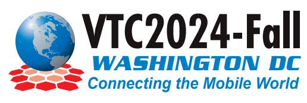
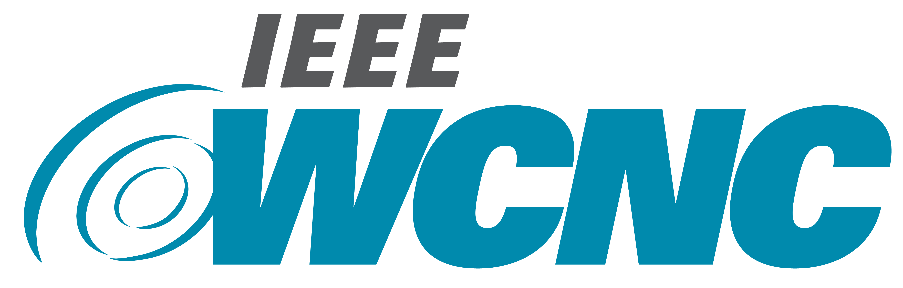
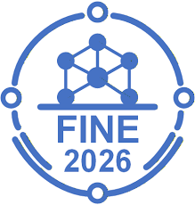
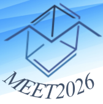
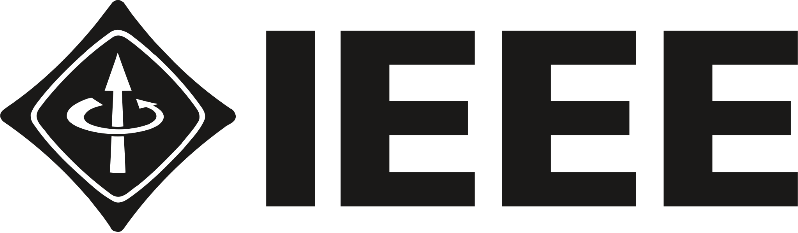

About Me
I am a Ph.D. researcher at Coventry University (thesis submitted: May 2026) specialising in end-to-end (E2E) network slicing for 5G/6G. My work sits at the intersection of mobile network architecture, resource management, and AI-enabled orchestration, informed by prior industry roles in telecom operations and core network engineering.
I am preparing for industry R&D / advanced engineering/design roles in networking and telecom, with interests spanning network automation/orchestration, NFV/SDN, resource allocation, MEC/task offloading, and deep reinforcement learning for closed-loop network control.
News
Attended IETF Standards-in-Practice Workshop
Glasgow, Scotland, UK
Participated in the hands‑on, introductory event designed to help researchers, students, and engineers understand how the IETF works, and how their own research can translate into meaningful standards contributions. Travel funded by the SICSA.
Research at HORIBA MIRA — Project CERTUS
CCAAR, HORIBA MIRA, Nuneaton, UK
Joined the Innovate UK-funded CERTUS project for V2X integration and validation on CAV testbeds at CCAAR.
Presentation at the Advanced Internet Technologies: Winter PhD School 2024
Barcelona, Spain
Presented "DRL-enabled Mobility-Aware RAN Slicing Resource Allocation for Open RAN Deployments". Also attended the insightful keynotes from inspiring researchers. Travel funded by the Spanish Government's UNICO I+D 6G programme.
Paper Presented at IEEE CAMAD 2024
Athens, Greece
Presented MARSRA paper in Session: Distributed AI-Driven Open & Programmable Architecture for 6G Networks.
Survey Published in IEEE COMST (IF: 50.6)
Coventry, UK
Published "Resource Management From Single-domain 5G to End-to-End 6G Network Slicing: A Survey" in the highest impact-factor journal in telecommunications.
TPC Member — IEEE VTC2024-Fall
Washington DC, USA
Served on the Technical Program Committee of the 2024 IEEE 100th Vehicular Technology Conference.
3rd Best Paper — ITU Kaleidoscope 2020
Ha Noi, Vietnam
Paper "Digital Transformation VIA 5G: Deployment Plans" awarded 3rd best paper at the ITU Kaleidoscope conference.
Expertise
My core research and engineering strengths.
5G/6G & Network Slicing
Deep Reinforcement Learning
Multi-Agent Systems
SDN / NFV / O-RAN
MEC & Task Offloading
Resource Allocation
Closed-loop Automation
Telecom Standards (3GPP)
Education
Coventry University
Ph.D. in E2E Network Slicing
Centre for Future Transport & Cities (CFTC), Coventry, United Kingdom
Dissertation: 5G/6G End-to-End Network Slicing Framework for Vertical Industries
Developing the ENSURE framework: a multi-agent deep reinforcement learning architecture for joint resource management across RAN, TN, and CN domains in 6G networks. Research spans Masked PPO, curriculum learning, multi-timescale coordination, and satisfaction-based reward formulations.
Supervisors: Olivier C. L. Haas, Soufiene Djahel, Hui Zhou, and Faouzi Bouali
Tarbiat Modares University
M.Sc. in Software Engineering — GPA: 3.54/4.0
Dept. of Electrical & Computer Engineering, Tehran, Iran
Thesis: A Resource Allocation Method for Network Slicing in Software-Defined 5G Networks
Supervisors: Behzad Akbari and Nader Mokari
University of Zanjan
B.Sc. in Software Engineering — GPA: 3.31/4.0
Dept. of Electrical & Computer Engineering, Zanjan, Iran
Capstone: Design and Implementation of an Appointment Reservation System using ASP.NET MVC
Supervisor: Davud Mohammadpur
Experience
Coventry University
Research Assistant
Centre for Future Transport & Cities (CFTC), Coventry, UK
Working on the simulation and design of an E2E resource management framework for network slicing. Courses taken: Machine Learning (Spring 2024), Artificial Neural Networks (Fall 2024).
HORIBA MIRA
Research Assistant (V2X Systems Integration) — Project CERTUS
CCAAR, Nuneaton, UK
Innovate UK-funded CERTUS: V2X integration/validation on CAV testbeds. Integrated and validated Cohda Wireless MK6 C-V2X units on StreetDrone CAV platforms. Debugged PC5/802.11p communications and automated diagnostic checks. Analysed steering telemetry in Python to estimate control-loop delay.
SINA Communication Systems Co.
Network Solutions Specialist
Router R&D Dept., Tehran, Iran
Network solution provider and manufacturer of transmission network devices. Tested and verified NOS protocol modules with TRex, GNS3, and Wireshark. Experience with OF-DPA, OpenFlow, FRRouting, OpenDaylight, ONOS, and Stratum.
RighTel Telecommunications
Network Performance Tools Engineer
Network Quality & Supervision Dept., Tehran, Iran
Third 3G/4G telecom operator in Iran. Built KPI ETL pipelines and Grafana dashboards for OSS telemetry; automated daily network health reporting and downtime alerts. Installed and maintained local PostgreSQL and GitLab CE servers on Ubuntu VMs.
Mobile Communication Company of Iran (MCI)
5G Core Network Researcher
Mobile Network Technology Solution & Strategy Dept., Tehran, Iran
Collaborative project by Dr. Mokari's team at Tarbiat Modares University. Topics: 5G Mobile Core Network Architecture, SDN, NFV, Orchestration, Network Slicing, 5G Core Network Functions, and 5G System Design. Prepared reports, bulletins, and presentations on standardisation and migration plans. Commended by the MCI Technical Deputy for outstanding research.
Publications
Journal Papers
"ENSURE: Multi-Timescale E2E Slice Resource Management for 5G/6G Networks"
IEEE Trans. on Cognitive Communications and Networking (IF: 8.0), Submitted, pp. 1-13, Apr 2026
"Resource Management From Single-domain to End-to-End Network Slicing: A Survey"
IEEE Communications Surveys & Tutorials (IF: 50.6), vol. 26, no. 4, pp. 2836-2866, 2024
"Energy-Efficient Task Offloading Under E2E Latency Constraints"
IEEE Trans. on Communications (IF: 8.4), vol. 70, no. 3, pp. 1711-1725, 2022
Conference Papers
"Digital Transformation VIA 5G: Deployment Plans" 3rd Best Paper
ITU Kaleidoscope 2020, Ha Noi, Vietnam
Presentations & Events
Presented
Poster Presentation: "ENSURE: Multi-Timescale E2E Slice Resource Management for 6G Networks", 1st Seminar of Towards Edge Intelligence (TEI), May 2026, BDFI, University of Bristol, Bristol, UK. (travel/accommodation was awarded via the University of Bristol (JOINER Project))
Poster Presentation: "Multi-Timescale E2E Slice Resource Management using Multi-Agent DRL for 6G Networks", Coventry Centre for Doctoral Training in AI Community Event, April 2026, Coventry University, Coventry, UK.
DRL-enabled Mobility-Aware RAN Slicing for Open RAN, Winter PhD School 2024, i2CAT, Barcelona, Spain. (Funded by UNICO I+D 6G)
Conversations with Graduates Webinar Series (Online Interview), MFet / IEEE Sharif UT / ZNU EE Association, Iran.
MARSRA, Session: Distributed AI-Driven Open & Programmable Architecture for 6G Networks, IEEE CAMAD 2024, Athens, Greece.
Application of DRL to RAN Slicing (Online), NetsLab, University College Dublin, Ireland.
Joint Resource and Admission Management, Session: SDN & NFV — Resource & Slice Management, IEEE/IFIP NOMS 2020, Budapest, Hungary.
An Introduction to SDN, NFV, and Network Slicing, Niroo Research Institute (NRI), Tehran, Iran.
REST APIs in 3GPP 5G Standards and 5G Core Network Migration (from EPC), MCI, Tehran, Iran.
5G Core Network Overview (Iran Telecom Exhibition) and 5G Standardization: NFV, SDN, Network Slicing, SBA, MCI, Tehran.
Recent Trends in 5G Core Network Technologies: IMT-2020, NFV, SDN, Slicing, 5G-PPP, 3GPP Deployment Options, MCI, Tehran.
Attended
IEEE ComSoc Student & Young Professionals Career Fair @ IEEE ICC 2026, 27 May 2026, SEC, Glasgow, UK (ICC attendance (day pass) awarded via IEEE ComSoc)
IETF Standards-in-Practice Workshop, Mar 2026, University of Glasgow, Glasgow, UK (travel/accommodation was awarded via the University of Glasgow and SICSA)
Connected Britain 2025, ExCeL, London, UK.
Human-Centred AI: An Interdisciplinary Network, Coventry University.
Advanced Digital Technologies Workshop, i2CAT, Barcelona. (Funded by UNICO I+D 6G)
Nokia 5G Update for MCI Workshop, Tehran, Iran.
Review & TPC Services
Journal Reviewer  Clarivate Profile
Clarivate Profile
Conference TPC Member

IEEE VTC2024-Fall — Washington DC, USA
IEEE WCNC 2025 — Milan, Italy
IEEE FINE 2026 (IEEE International Conference on Future and Intelligent Networking; PC in AI for Network Design, Control, and Operations) — Osaka, Japan
MEET 2026 (The 2nd International Conference on Meta-Networking) — Tokyo, JapanSkills
Core
5G/6G, Network Slicing, NFV, SDN, O-RAN, MEC, Telecom Standards, Resource Allocation, Closed-loop Automation
Networking
Wireshark, TRex, GNS3, OpenFlow, FRRouting, ONOS, Stratum
Programming & Data
Python, SQL (PostgreSQL / MS SQL), .NET Core, MATLAB, pandas, NumPy, PyTorch, scikit-learn
Research
LaTeX, MS Office, EndNote, DRL (Stable-Baselines3, Ray RLlib), Gymnasium, CVX, Gurobi
Tools
Linux, Git, GitLab, Grafana, Docker
Licenses & Certifications
IELTS
IDP — Overall: 7.5 (L: 9, R: 7.5, W: 6.5, S: 7.5)
 Machine Learning — Stanford (Coursera)
Machine Learning — Stanford (Coursera)
Online, Summer 2021
5G & Mobile Broadband — ITU Academy
Online, Spring 2021
 CCNA — Cisco Certified Network Associate
CCNA — Cisco Certified Network Associate
Carrier Digit Institute, Tehran
Academic & Professional Memberships

IEEE Graduate Student Member (No.: 95013754)Member of IEEE ComSoc, VTS, CS, YP, and R8 — UK & Ireland
Volunteering
Graduate Student Mentor (Volunteer)
Assisted 10+ candidates with PhD applications, leading to 7 successful placements in 2024.
Board Member — Simorgh Film & Photo Center
University of Zanjan, Iran
Organised screenings, subtitled films, produced videos, and managed board elections. Directed ticket proceeds as donations to the Iranian Society of Students Against Poverty (SOSA).
References
Contact
Location
Coventry, United Kingdom